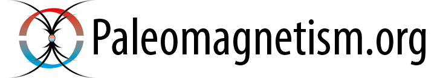

Reference: Koymans, M.R., Langereis, C.G., Pastor-Galan, D., and van Hinsbergen, D.J.J., Paleomagnetism.org: An online multi-platform open source environment for paleomagnetic data analysis, Computers and Geosciences, Volume 93, Pages 127–137 (2016)

Published data
Paleomagnetic esults that have been published are added here. Data from these publications are directly loaded to a session in Paleomagnetism.org.
Paleomagnetic Database of Regions
- Reinoud L.M. Vissers, Douwe J.J. van Hinsbergen, Douwe G. van der Meer, Wim Spakman, Cretaceous slab break-off in the Pyrenees: Iberian plate kinematics in paleomagnetic and mantle reference frames Gondwana Research, Volume 34, June 2016, Pages 49–59
- Li, Z., Ding, L., Lippert, P.C., Song, P., Yue, Y. and, van Hinsbergen, D.J.J., 2016, Paleomagnetic constraints on the Mesozoic drift of the Lhasa terrane (Tibet) from Gondwana to Eurasia, Geology 44, p. 727-730
Interpretation
© 2016 Paleomagnetism.org. Please cite all contributors if you use this application for your research.


Disclaimer: Paleomagnetism.org is an open-source initiative licensed under the GNU General Public License v3.0. All data processing is handled on the client-side within your browser. Graph exporting is delivered via the Highcharts content delivery network under the Highcharts exporting privacy policy.